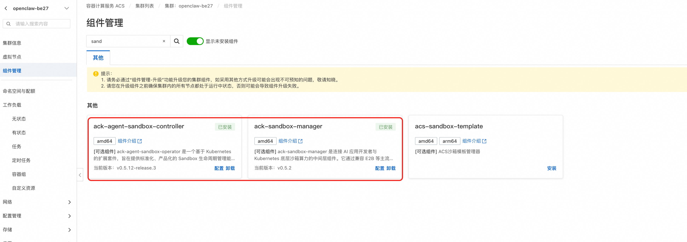
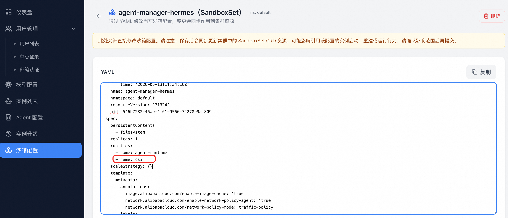

v1.0.2
- 发布日期：2025-05-14
新增功能
新增 QwenPaw 智能体类型
- 平台内置全新 QwenPaw Agent 类型，支持一键创建 QwenPaw 实例。
- 用户在创建实例时可在 OpenClaw、Hermes、QwenPaw 等多种 Agent 类型间自由选择。
实例升级能力
- 沙箱（Sandbox）升级：用户可在控制台对运行中的实例执行沙箱镜像升级，升级过程支持保留用户数据（retention）。
- 新增升级界面与按钮：实例详情页新增「升级」入口与版本面板，提供一目了然的升级体验。
- 升级过程中支持选择默认升级配置，简化操作。
Skill 挂载
- 实例支持挂载 Skill，用户可为 Agent 配置自定义技能包，无需重新创建实例。
实例配置在线修改
- 支持对运行中的实例增量修改 Agent 关联的模型与渠道配置，配置变更即时生效，无需销毁重建。
管理后台增强
- 删除用户前会判断该用户名下是否存在实例，避免误删导致资源残留。
- 修复修改密码后实例列表丢失的问题。
- 用户管理 API 新增创建用户/创建实例的接口示例文档。
文档完善
- 新增 E2B 证书与域名变更指南，指导客户在证书或域名调整后正确更新平台配置。
- 新增沙箱配置说明章节，补充官方使用文档。
- 制定并落地设计文档目录规范。
其他改进
- 修正 SLS 时间戳计算逻辑，监控数据按东八区（UTC+8）业务口径展示。
- 修复 LiteLLM 在英文界面下被错误显示为「Proxy」的翻译问题，统一改为「Gateway」。
- 模型配置页面与网关相关多语言遗漏修复。
升级步骤
此版本新增的实例升级能力和Skill 挂载能力需要升级集群中的acs-sandbox-manager组件版本，以及更新集群中已有的SandboxSet, 升级参考以下步骤：
步骤一： 请参考 Release Notes 通用升级方式：在计算巢控制台对服务实例执行升级操作即可，数据库迁移会随升级流程自动完成。
步骤二： 1. 在集群中找到组件"ack-agent-sandbox-controller" 和"ack-sandbox-manager", 分别升级到最新版本。

2. 在Agent Manager 平台，沙箱配置中找到SandboxSet “agent-manager-openclaw” 和“agent-manager-hermes”，修改内容如下 - spec.runtimes中增加'- name: csi', 如下图所示
- 更新agent-manager-openclaw 和 agent-manager-hermes 中的镜像，分别为以下两个镜像compute-nest-registry.cn-hangzhou.cr.aliyuncs.com/computenest/openclaw-manager-openclaw-test:v0.0.2
compute-nest-registry.cn-hangzhou.cr.aliyuncs.com/computenest/openclaw-manager-hermes-test:v0.0.2
注意事项
- 本版本支持复用已有 OSS Bucket，升级时如需切换为复用模式，请在升级参数中填写已有 Bucket 名称。
- 升级到本版本后，原实例可在控制台直接进行沙箱与 Hermes 升级操作，建议先在测试实例验证后再推广到生产实例。
- 如果有手动修改证书和域名的操作。需要手动将ConfigMap: openclaw-platform-config中的E2B_DOMAIN还原为手动修改的值
- 实例升级能力和Skill挂载依赖此能力：Agent Sandbox挂载共享存储，使用此能力需要为容器开放特权容器 (Privileged Container) 和 宿主机路径 (hostPath，/var/run/csi) 的容器安全验证，可以提交工单放开限制，但由此带来的安全风险需要用户承担一定责任，相关机制请参见安全责任共担模型。
- 网络策略：本版本新增了
agent-manager-openclaw工作负载，需要确认集群中 GlobalTrafficPolicy 的spec.selector.matchLabels能匹配到该 Pod，否则网络隔离策略不会对新 Pod 生效。详见 使用 TrafficPolicy 管理 Agent 网络访问。 - 实例升级能力和Skill挂载依赖此能力：Agent Sandbox挂载共享存储，使用此能力需要为容器开放特权容器 (Privileged Container) 和 宿主机路径 (hostPath，/var/run/csi) 的容器安全验证，可以提交工单放开限制，但由此带来的安全风险需要用户承担一定责任，相关机制请参见安全责任共担模型。
© 2009-2022 Aliyun.com 版权所有